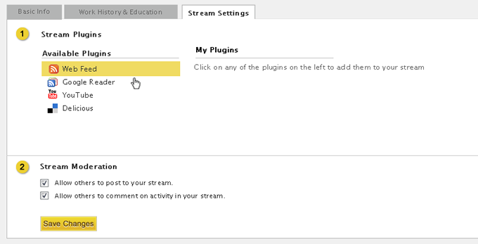
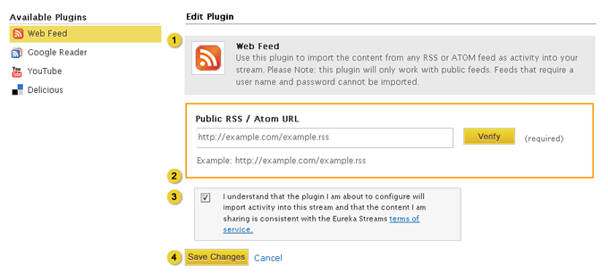
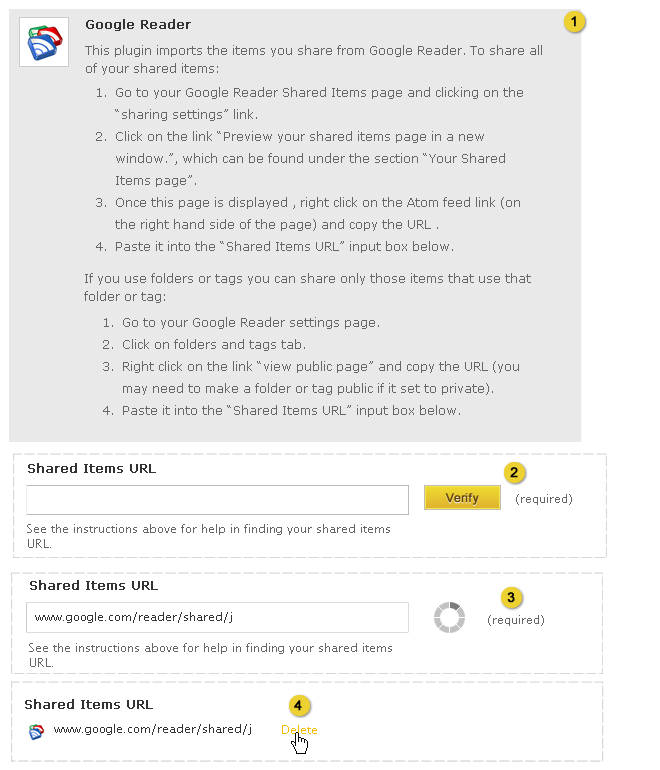

Home > Product Specification > Features > Configure a stream
Configure a stream
Manage and receive notifications
Manage streams and groups
This page will replace the 0.9 specification for Configure a stream when Eureka Stream 1.0 is released. This product specification is a work in process.
Overview
Knowledge workers can configure a stream to allow or restrict posting and commenting on the knowledge workers stream. Stream plugins can also be configured to provide the employee or group with the most up to date data from sources such as delicious, google reader, or youtube.
Conditions of satisfaction
- The knowledge worker must have the option to not allow colleagues to post to his employee or group stream.
- The knowledge worker must have the option to not allow colleagues to comment on activity in his employee or group stream.
- The system must allow knowledge workers to post and comment on activity in an employee or public group stream by default.
- The knowledge worker must be able to select from and configure a stream plugin to import activity into his employee or group stream.
- The knowledge worker must be able to remove a stream plugin configured for his employee or group stream.
- The system must display a warning message if a stream plugin failed to import activity.
- The knowledge worker must be able to import an atom or rss feed’s entries into his employee or group stream.
- The knowledge worker must be able to import a delicious user’s bookmarks into his employee or group stream.
- The knowledge worker must be able to import a google reader user’s shared items into his employee or group stream.
- The knowledge worker must be able to import a youtube channel’s videos into his employee or group stream.
User experience
Stream Settings Employee Profile

- Stream plugin settings
- When changes are saved, feedback is displayed at the top of the page with a close option: “Stream Settings saved”. Refer to the Action Feedback UI design pattern for additional details.
Stream Moderation Employee Profile

- Message displayed in the knowledge workers profile and the activity page when the “Allow others to post to your stream.” option is disabled. The knowledge worker who owns the profile should be the only one able to post to the stream.

- Comment link should be hidden in all profiles that display the post (root org, sub org, and knowledge worker profile) and the activity page when the “Allow others to comment on activity in your stream.” option is disabled. The knowledge worker who owns the profile should be the only one able to comment on the post.
- Sharing to a knowledge workers profile from other profiles (root org, sub org, group, and other knowledge workers) and the activity page should be prohibited when the “Allow others to post to your stream.” option is disabled. The knowledge worker who owns the profile should be the only one able to share to the stream. Do not display the knowledge workers name in the auto complete results in this scenario.
- Delete link should be hidden in all profiles that display the post (root org, sub org, and knowledge worker profile) and the activity page when the “Allow others to post to your stream.” option is disabled or the comment when the “Allow others to comment on activity in your stream.” is disabled. The knowledge worker who owns the profile and the parent org coordinators (i.e. if message is flagged) should be able to delete the post and comments.
Stream Settings Group Profile

- Stream plugin settings
- When changes are saved, feedback is displayed at the top of the page with a close option: “Stream Settings saved”. Refer to the Action Feedback UI design pattern for additional details.
Stream Moderation Group Profile

- Message displayed in the group profile and the activity page when the “Allow others to post to your group’s stream.” is disabled. Group coordinators, sub organization coordinators (if applicable), and root organization coordinators should be able to post to the group stream.

- Comment link should be hidden in all profiles that display the post (root org, sub org, and group profile)and the activity page when the “Allow others to comment on activity in your group’s stream.” option is disabled. Group coordinators, sub organization coordinators (if applicable), and root organization coordinators should be able to comment on posts in the group stream.
- Sharing to a group profile from other profiles (root org, sub org, and other knowledge workers) or activity page should be prohibited when the “Allow others to comment on activity in your group’s stream.” option is disabled. Group coordinators, sub organization coordinators (if applicable), and root organization coordinators should be able to share posts to the group stream. Do not display the group name in the auto complete results in this scenario.
- Delete link should be hidden in all profiles that display the post (root org, sub org, and group profile) and the activity page when the “Allow others to comment on activity in your group’s stream.” option is disabled. Group coordinators, sub organization coordinators (if applicable), and root organization coordinators should be the only ones able to delete a post from a group stream.
Adding Stream Plugins

- Clicking the plugin name displays the plugin configuration form.

Stream plugin components
- Header- provides an overview of the plugin and instructions on how to configure it.
- Plugin form - composed of one or more form elements required to configure the plugin.
- Terms of service message - each knowledge worker is required to affirm that they understand the terms of use statement before they they can complete the configuration of the plugin.
- Clicking submit completes the configuration and takes the knowledge worker to list of configured plugins. Feedback displays at the top of the page with a close option: “Stream Plugin has been successfully added”. Refer to the Action Feedback UI design pattern for additional details.

- The knowledge worker enters a URL or username and clicks import.
- This displays a process animation while the system validates the entered information. If the information can’t be validated a warning message is displayed to the knowledge worker.
- When the entered information is successfully validated the feed name is displayed. The knowledge worker can delete their entry by clicking the Delete link which will return the input form.
Managing Plugins

- Plugins are listed in reverse chronological order
- Hovering over the plugin icon or text displays the Edit and Delete links.
- Clicking edit displays the plugin configuration form titled edit plugin.
- Clicking the delete icon displays a pop-up window asking the knowledge worker: “Are you sure you want to delete this plugin” if the knowledge worker clicks “yes” the plugin is deleted and a warning message is displayed: “Stream plugin [insert name] has been deleted”. Refer to the Action Feedback UI design pattern for additional details.
Editing Stream Plugins

Stream plugin components
- Header- provides an overview of the plugin and instructions on how to configure it.
- Plugin form - composed of one or more form elements required to configure the plugin.
- Terms of service message - each knowledge worker is required to affirm that they understand the terms of use statement before they they can complete the configuration of the plugin.
- Clicking save changes completes the configuration and takes the knowledge worker to list of configured plugins. Feedback displays at the top of the page with a close option: “Stream Plugin has been successfully edited”. Refer to the Action Feedback UI design pattern for additional details.
Delicious Plugin

- Header
- Form
- Process animation
- Validated user name
Activity Generated from the Delicious Plugin

- Post indicating that a stream plugin has been configured for an employee profile. For a group profile stream plugin message, substitute employee name for group name. Only new activity from this point forward is imported from the stream plugin.
- Time since stream-plugin was configured.
- Bookmark content type
- Link opens a new window displaying the user’s shared bookmarks page.
Web Feed Plugin

- Header
- Form
- Process animation
- Validated web feed
Activity Generated from the Web Feed Plugin

- Post indicating that a stream plugin has been configured for an employee profile. For a group profile stream plugin message, substitute employee name for group name. Only new activity from this point forward is imported from the stream plugin.
- Time since stream-plugin was configured.

- Bookmark content type
- Name of the source of the feed
- Time Stamp and Source
Google Reader

- Header
- Form
- Process animation
- Validated shared items feed
Activity Generated from the Google Reader Plugin

- Post indicating that a stream plugin has been configured for an employee profile. For a group profile stream plugin message, substitute employee name for group name. Only new activity from this point forward is imported from the stream plugin.
- Time since stream-plugin was configured.

- Bookmark content type
- Link opens a new window displaying the user’s shared items.
- Time Stamp and Source
YouTube

- Header
- Form
- Process animation
- Validated YouTube feed
Activity Generated from the Google Reader Plugin

- Post indicating that a stream plugin has been configured for an employee profile. For a group profile stream plugin message, substitute employee name for group name. Only new activity from this point forward is imported from the stream plugin.
- Time since stream-plugin was configured.

- Video content type
- Link opens a new window displaying the profile page of the configured YouTube user.
Test plans
Knowledge Worker
- Action: From the employee profile, disable the option to ‘“Allow others to post to your stream.”
- Verify posting to an employee stream
- Verify the knowledge worker who owns the employee stream can post to the stream from the knowledge workers profile or the activity page
- Verify that a colleague cannot post to the employee stream from the knowledge workers profile or the activity page
- Verify a group coordinator cannot post to the employee stream from the knowledge workers profile or the activity page
- Verify a sub organization coordinator cannot post to the employee stream from the knowledge workers profile or the activity page
- Verify a root organization coordinator cannot post to the employee stream from the knowledge workers profile or the activity page
- Verify sharing to and from the employee stream
- Verify for all user roles, a post can be shared from the knowledge workers profile to another profile (root org, sub org, group and other knowledge workers)
- Verify that a colleague cannot share to the employee stream from another profile (root org, sub org, and other knowledge workers) or the activity page
- Verify a group coordinator cannot share to the employee stream from another profile (root org, sub org, group, and other knowledge workers) or the activity page
- Verify a sub organization coordinator cannot share to the employee stream from another profile (root org, sub org, group, and other knowledge workers) or the activity page
- Verify a root organization coordinator cannot share to the employee stream from another profile (root org, sub org, group, and other knowledge workers) or the activity page
- Verify deletion of a post
- Verify that a colleague cannot see the delete link for posts in the employee stream from the knowledge workers profile or the activity page
- Verify a group coordinator cannot see the delete link for posts in the employee stream from the knowledge workers profile or the activity page
- Verify a parent organization coordinator can delete posts in the employee stream from the knowledge workers profile or the activity page (this is needed if activity is flagged and reviewed by the parent organization)
- Verify a sub organization coordinator who is not the parent organization coordinator cannot view the delete link for posts in the employee stream from the knowledge workers profile or the activity page (this is needed if activity is flagged and reviewed by the parent organization)
- Verify a root organization coordinator who is not the parent organization coordinator cannot view the delete link for posts in the employee stream from the knowledge workers profile or the activity page (this is needed if activity is flagged and reviewed by the parent organization)
- Action: From the group profile, disable the option to “Allow others to post to your group’s stream.”
- Verify posting to the group stream
- Verify that a colleague cannot post to the group stream from the group profile or the activity page
- Verify a group coordinator can post to the group stream from the group profile or the activity page
- Verify a sub organization coordinator can post to the group stream within his organization or sub organization from the group profile or the activity page
- Verify a root organization coordinator can post to the group stream within his organization or sub organization from the group profile or the activity page
- Verify sharing to and from the group stream
- Verify for all user roles, a post cannot be shared from a private group to another profile (root org, sub org, and other knowledge workers)
- Verify that a colleague cannot share to the group stream from another profile (root org, sub org, and other knowledge workers) or the activity page
- Verify that a colleague can share from a public group stream to another profile (root org, sub org, and other knowledge workers)
- Verify a group coordinator can share to the group stream from another profile (root org, sub org, and other knowledge workers) or the activity page
- Verify a sub organization coordinator can share to the group stream from another profile (root org, sub org, and other knowledge workers) or the activity page
- Verify a root organization coordinator can share to the group stream from another profile (root org, sub org, and other knowledge workers) or the activity page
- Verify deletion of a group post
- Verify that a colleague cannot see the delete link for posts in the group stream or the activity page
- Verify a group coordinator can delete posts in the group stream or the activity page
- Verify a sub organization coordinator can delete posts in the group stream or the activity page
- Verify a root organization organization coordinator can delete posts in the group stream or the activity page
- Action: In the employee profile, disable the “Allow others to comment on activity in your stream.” option.
- Verify that the knowledge worker can comment on posts in his own employee stream from all profiles that display the post (root org, sub org, and knowledge worker profile) and the activity page
- Verify that a colleague cannot view the comment link for posts in the employee stream from all profiles that display the post (root org, sub org, and knowledge worker profile) and the activity page
- Verify a group coordinator cannot view the comment link for posts in the employee stream from all profiles that display the post (root org, sub org, and knowledge worker profile) and the activity page
- Verify a sub organization coordinator cannot view the comment link for posts in the employee stream from all profiles that display the post (root org, sub org, and knowledge worker profile) and the activity page
- Verify a root organization coordinator cannot view the comment link for posts in the employee stream from all profiles that display the post (root org, sub org, and knowledge worker profile) and the activity page
- Action: In the group profile, disable the “Allow others to comment on activity in your group’s stream.” option.
- Verify that a colleague cannot view the comment link for posts in the group stream from all profiles that display the post (root org, sub org, and group profile) and the activity page
- Verify a group coordinator can comment on posts in the employee stream from all profiles that display the post (root org, sub org, and group profile) and the activity page
- Verify a sub organization coordinator can comment on posts in the employee stream from all profiles that display the post (root org, sub org, and group profile) and the activity page
- Verify a root organization coordinator can comment on posts in the employee stream from all profiles that display the post (root org, sub org, and group profile) and the activity page
- Action: Confirm that posting and commenting on activity in an employee or public group stream is set as the default
- Verify the ‘Allow others to post to your stream’ option is enabled by default
- Verify the ‘Allow others to comment on activity in your stream’ option is enabled by default
- Verify that the ‘Allow others to post to your groups stream’ option is enabled by default
- Verify that the ‘Allow others to comment or activity in your group’s stream’ option is enabled by default
- Action: Select from and configure a stream plugin to import activity into an employee or group stream
- Fullfilled by executing Steps 7-11
- Action: Remove a stream plugin configured in an employee or group stream
- Fullfilled by executing Steps 7-11
- Action: Create a failure scenario for a stream plugin in an employee or group stream
- Fullfilled by executing Steps 7-11
- Action: Import an atom or rss feed’s entries into an employee or group stream
- Verify a rss feed can be imported for an employee or group
- Verify a atom feed can be imported for an employee or group
- Verify a valid Public RSS / Atom URL is required
- Verify a message is displayed if there is an error importing the feed
- Verify the Terms of Use is required
- Verify the feed is displayed when clicking on the source link
- Verify the feed plugin can be edited
- Verify the feed plugin can be deleted
- Verify the feed is displayed in the employee’s activity stream
- Verify the feed is displayed in the group activity stream
- Action: Import a delicious user’s bookmarks into an employee or group stream
- Verify the delicious plugin can be imported for an employee or group
- Verify a valid user name is required
- Verify a message is displayed if there is an error importing the feed
- Verify the Terms of Use is required
- Verify that a delicious plugin avatar, user name, and source of the feed are displayed in the My Plugins
- Verify the delicious feed is displayed when clicking on the source link
- Verify the delicious plugin can be edited
- Verify the delicious plugin can be deleted
- Verify the delicious feed is displayed in the employee’s activity stream
- Verify the delicious feed is displayed in the group activity stream
- Action: Import a google reader user’s shared items into an employee or group stream
- Verify the google reader plugin can be imported for an employee or group
- Verify a Shared Items URL is required
- Verify a message is displayed if there is an error importing the feed
- Verify the Terms of Use is required
- Verify that a Google Reader plugin avatar, user name, and source of the feed are displayed in the My Plugins
- Verify the google reader feed is displayed when clicking on the source link
- Verify the google reader plugin can be edited
- Verify the google reader plugin can be deleted
- Verify the google reader feed is displayed in the employee’s activity stream
- Verify the google reader feed is displayed in the group activity stream
- Action: Import a youtube channel’s videos into an employee or group stream
- Verify the youtube plugin can be imported for an employee or group
- Verify a valid user name is required
- Verify a message is displayed if there is an error importing the feed
- Verify the Terms of Use is required
- Verify that a youtube plugin avatar, user name, and source of the feed are displayed in the My Plugins
- Verify the youtube feed is displayed when clicking on the source link
- Verify the youtube plugin can be edited
- Verify the youtube plugin can be deleted
- Verify the youtube feed is displayed in the employee’s activity stream
- Verify the youtube feed is displayed in the group activity stream
Group Coordinator
- Action: Execute same tests as Knowledge Worker
- Verify tests executed successfully
Organization Coordinator
- Action: Execute same tests as Knowledge Worker
- Verify tests executed successfully
Root Organization Coordinator
- Action: Execute same tests as Knowledge Worker
- Verify tests executed successfully
| PAGE CONTENTS
Version 1.1
Documentation is also available for all of the following versions:
0.9 | 1.0 | 1.5 | 2.0
|